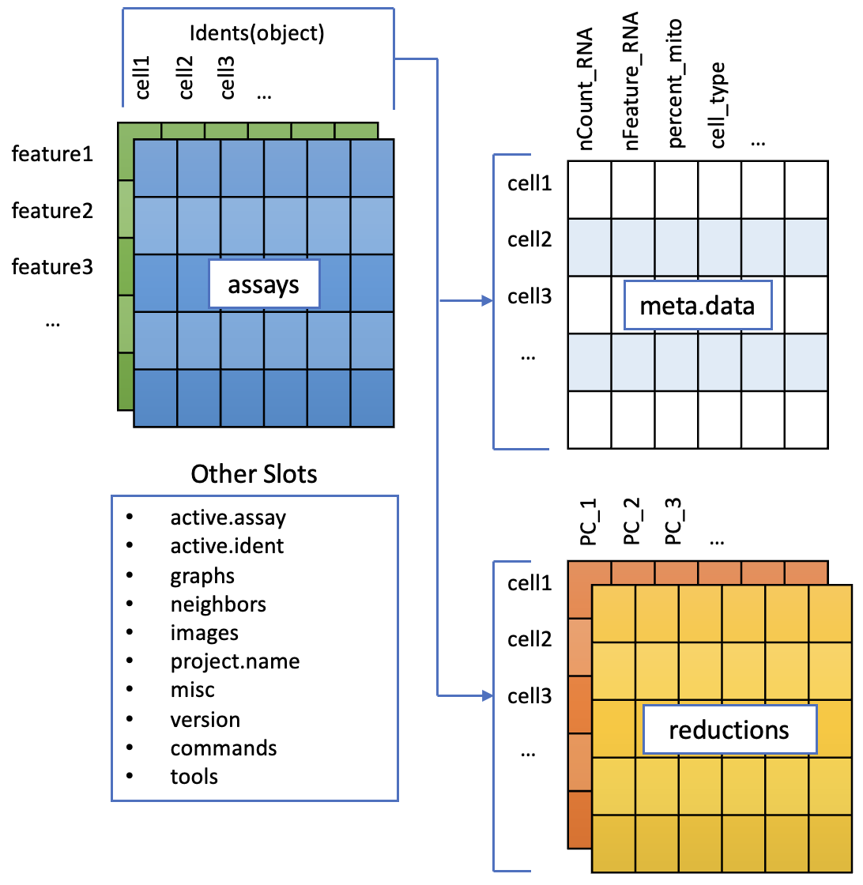

17 The Seurat object
17.1 Load an existing Seurat object
And here’s the one we prepared earlier. Seurat objects are usually saved as ‘.rds’ files, which is an R format for storing binary data (not-text or human-readable). The functions readRDS() can load it.
Discussion: The Seurat Object in R
Lets take a look at the seurat object we have just created in R, seurat_object
To accommodate the complexity of data arising from a single cell RNA seq experiment, the seurat object keeps this as a container of multiple data tables that are linked.

The functions in seurat can access parts of the data object for analysis and visualization, we will cover this later on.
There are a couple of concepts to discuss here.Class
These are essentially data containers in R as a class, and can accessed as a variable in the R environment.
Classes are pre-defined and can contain multiple data tables and metadata. For Seurat, there are three types.
- Seurat - the main data class, contains all the data.
- Assay - found within the Seurat object. Depending on the experiment a cell could have data on RNA, ATAC etc measured
- DimReduc - for PCA and UMAP
Layer
A layer is part of the assay that contains a table of data. E.g. The RNA assay will typically have a ‘counts’ layer for raw counts and a ‘data’ layer for normalised counts.
Data Access
Many of the functions in Seurat operate on the data class and slots within them seamlessly. There maybe occasion to access these separately to hack them, however this is an advanced analysis method.
Examples of accessing a Seurat object
The assays slot in seurat_object can be accessed with seurat_object@assays.
The RNA assay can be accessed from this with seurat_object@assays$RNA.
We often want to access assays, so Seurat nicely gives us a shortcut seurat_object$RNA. You may sometimes see an alternative notation seurat_object[["RNA"]].
In general, slots that are always in an object are accessed with @ and things that may be different in different data sets are accessed with $.
Have a go
Use str to look at the structure of the Seurat object seurat_object.
What is in the meta.data slot within your Seurat object currently? What type of data is contained here?
Where is our count data within the Seurat object?
NB: A more detailed explanation of this format is here biostats squid Seurat Objects explained
17.2 What’s in there?
Some of the most important information for working with Seurat objects is in the metadata. This is cell level information - each row is one cell, identified by its barcode. Extra information gets added to this table as analysis progresses.
head(seurat_object@meta.data)
#> orig.ident nCount_RNA nFeature_RNA ind
#> AGGGCGCTATTTCC-1 SeuratProject 2020 523 1256
#> GGAGACGATTCGTT-1 SeuratProject 840 381 1256
#> CACCGTTGTCGTAG-1 SeuratProject 3097 995 1016
#> TATCGTACACGCAT-1 SeuratProject 1011 540 1488
#> TGACGCCTTGCTTT-1 SeuratProject 570 367 101
#> TACGAGACCTATTC-1 SeuratProject 2399 770 1244
#> stim cell multiplets
#> AGGGCGCTATTTCC-1 stim CD14+ Monocytes singlet
#> GGAGACGATTCGTT-1 stim CD4 T cells singlet
#> CACCGTTGTCGTAG-1 ctrl FCGR3A+ Monocytes singlet
#> TATCGTACACGCAT-1 stim B cells singlet
#> TGACGCCTTGCTTT-1 ctrl CD4 T cells ambs
#> TACGAGACCTATTC-1 stim CD4 T cells singletThat doesn’t have any gene expression though, that’s stored in an ‘Assay’. The Assay structure has some nuances (see discussion below), but there are functions that get the assay data out for you.
By default this object will return the normalised data (from the only assay in this object, called RNA). Every ‘.’ is a zero.
GetAssayData(seurat_object)[1:15,1:2]
#> 15 x 2 sparse Matrix of class "dgCMatrix"
#> AGGGCGCTATTTCC-1 GGAGACGATTCGTT-1
#> MIR1302-10 . .
#> FAM138A . .
#> OR4F5 . .
#> RP11-34P13.7 . .
#> RP11-34P13.8 . .
#> AL627309.1 . .
#> RP11-34P13.14 . .
#> RP11-34P13.9 . .
#> AP006222.2 . .
#> RP4-669L17.10 . .
#> OR4F29 . .
#> RP4-669L17.2 . .
#> RP5-857K21.15 . .
#> RP5-857K21.1 . .
#> RP5-857K21.2 . .But the raw counts data is accessible too.
GetAssayData(seurat_object, layer='counts')[1:15,1:2]
#> 15 x 2 sparse Matrix of class "dgCMatrix"
#> AGGGCGCTATTTCC-1 GGAGACGATTCGTT-1
#> MIR1302-10 . .
#> FAM138A . .
#> OR4F5 . .
#> RP11-34P13.7 . .
#> RP11-34P13.8 . .
#> AL627309.1 . .
#> RP11-34P13.14 . .
#> RP11-34P13.9 . .
#> AP006222.2 . .
#> RP4-669L17.10 . .
#> OR4F29 . .
#> RP4-669L17.2 . .
#> RP5-857K21.15 . .
#> RP5-857K21.1 . .
#> RP5-857K21.2 . .17.3 Multiple counts layers?
When you first load a dataset with multiple samples you might notice multiple numbered counts layers - one for each sample.
This is a way for Seurat to smartly handle multiple samples during preprocessing (e.g. find Variable genes within samples, not across them).
But some analyses need to be run on everything combined, and you’ll need to run the ‘JoinLayers’ function to merge them back. Helpfully, you’ll get an error when this is necessary: Like this one from FindMarkers()
data layers are not joined. Please run JoinLayers
seurat_object <- JoinLayers(seurat_object)You can undo that with the split function
seurat_object <- split(seurat_object, seurat_object$sample)These commands for working with layers were introduced with Seurat 5, and described here